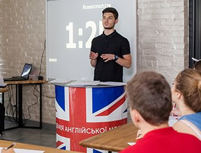
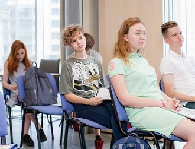

close
Lorem, ipsum.
smart teens
Годовая программа для школьников средних и старших классов с профориентацией и подготовкой к поступлению. Курс академического английского и практика с носителями языка позволят освоить публичную речь и академическое письмо на английском.
smart teens поможет в выборе профессии и подготовке к поступлению. Мы разработаем индивидуальный план получения престижного образования за границей!
разработка програм для разных возрастов
Малыши
0 — 3
подробнее...
Английский для малышей от 0 до 3-х лет
Максимально раннее изучение английского языка — лучший способ стимулировать работу мозга и увеличить интеллектуальный потенциал ребенка. При сравнении способностей детей, говорящих на одном и двух языках, билингвы часто оказываются более развитыми.
Дети
3 — 6
подробнее...
Английский для детей от 3 до 6 лет
В “Английский Хелен Дорон» мы создаем среду, в которой дети весело и без труда усваивают английское произношение, практикуют различные грамматические конструкции и увеличивают словарный запас. Все это происходит в развлекательной игровой форме с помощью музыки, движений и игр.
Школьники
6 — 12
подробнее...
Английский для школьников от 6 до 12 лет
У дошкольников и школьников младших классов, которые только начинают изучение иностранного языка, очень важно вызвать интерес к английскому языку. Наши преподаватели с помощью игры и веселых активностей включают детей в процесс познания мира на английском языке. Инновационная методика Хелен Дорон позволяет детям учиться говорить на английском и понимать его еще до того, как они начнут читать и писать, – так же, как и на их родном языке.
Подростки
12 — 18
подробнее...
Английский для подростков от 12 до 18 лет
Курсы английского для подростков разработаны с учетом потребностей и интересов молодежи таким образом, чтобы максимально заинтересовать студентов. Старшеклассники углубленно изучают грамматику, лексику и фонетику английского языка.
Летние
программы
подробнее...
Летние программы — 2018
Хотите, чтобы Ваш ребенок на каникулах не сидел целый день за гаджетом, а общался на английском со сверстниками? Мы разработали ряд программ для продолжения изучения английского языка во время летних, весенних, осенних и зимних каникул. Эти программы продолжительностью от 1 недели подходят как для студентов, которые уже занимаются в «Английский Хелен Дорон», так и для тех, кто еще не знаком с нами.
smart teens поможет вам определиться с будущей карьерой и специальностью для получения высшего образования. После завершения программы школьники получат сертификат — подтверждение уровня владения английским языком согласно cefr.

В процессе обучения вы освоите социальные навыки (soft skills): лидерские качества, креативность, презентация проектов на английском. Уроки лексики и грамматики от носителей языка помогают усвоить информацию в два раза быстрее.

Программа построена по примеру лучших зарубежных школ. В нее включены англоязычные занятия и мастер-классы, посвященные популярным профессиям и подготовке к поступлению в университет.
Уникальная программа!
Длительность
зимний семестр: 9 января – 26 мая
Мини-группы
до 8 человек, в зависимости от уровня английского
Учебники CLOSE UP
от National Geographic
3 занятия в неделю
2 стандартных урока + 1 урок с носителем языка/ англоязычная сессия по профориентации/проект
Сертификат в конце обучения
подтверждающий уровень владения английским согласно CEFR
Почему выбирают программу
smart teens

Помощь в выборе профессии
Специальные тесты на профессиональные способности, занятия и мастер-классы по основным специальностям. Совместные проекты с ориентированием на карьеру, англоязычные лекции и практические занятия помогут получить навыки необходимые для поиска себя и старта успешной карьеры.